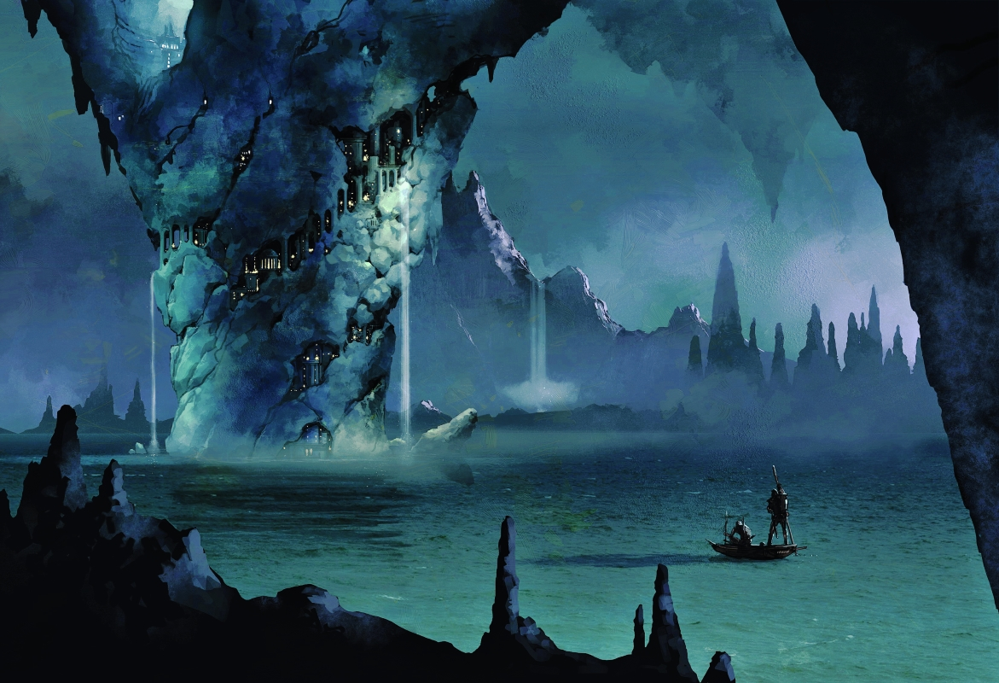

Mantol Derith
Below is the information gained from Kazoook during your journey toward Mantol Derith.
General Info
General Features
Located on the shores of the Darklake, within a naturally hollowed 400 foot stalagtite. Exact location unknown.
A 40 foot wide, 100 foot deep ravine bisects the the main trading cavern. Entrance is possible via lifts at the base of the ravine. The north side of the cavern houses the Zhentarim and deep gnome enclaves, while the south holds the duergar and drow.
Personages
Ghazrim is the guy in charge of the Zhentarim enclave. He supposedly has information about the location Gravenhollow.